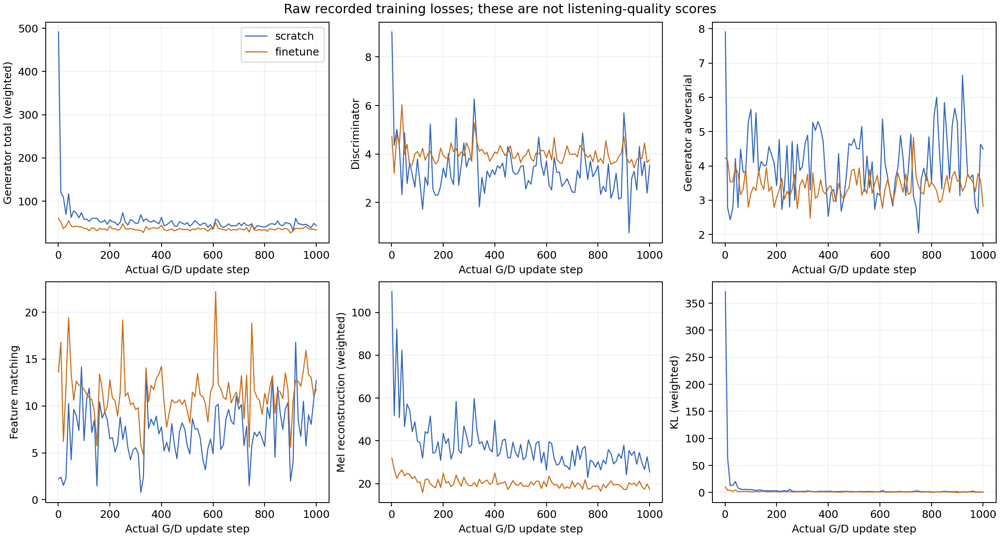

戴耳机，保持相同播放音量。先记录听感，再揭晓模型身份。这里只验证这段未参与训练的本人录音，没有跨歌者效果结论。
评分：自然度、歌词清晰度、像不像本人、音高稳定性，各 1–5 分，加备注。
下载评分表 · 实测报告
查看 X/Y 对应模型
这里是未做响度匹配的原始输出。loss 不能替代听评。
两个 summary 的实际更新数必须相等且状态 complete；这表示完成本轮训练协议。声音质量还需要试听与评分。

两组共享冻结 HuBERT 与 RMVPE，A 不代表整个系统从零训练。全部音频在本机播放。